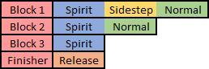
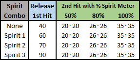
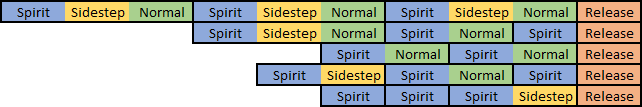

Sword and Shield is a very flexible weapon with fast hits, the ability to block, the ability to use items with the weapon unsheathed and lots of general mobility.
Raw damage is somewhat lacking on the SnS due to low motion values but with the speed of attacks it shines when paired with proper elemental or status weapons. SnS requires more knowledge of hitboxes to be used properly than most weapons because of this.
A number of attacks on the SnS deal both Stun and Impact damage, this means you can deal impact to break parts where it is required. This is however, quite impractical in most cases.
Elemental Damage is completely separate from motion values. The only factors that affect it are the Elemental Value on Weapon, the number of hits in a motion, the sharpness on the weapon and naturally the monster's weakness values. It does not matter if the motion is 16 or 220, it will be judged as a single hit. This means a fully charged great sword attack will do the same as a single fast hitting swipe of the sword and shield if they have the same elemental values.
If you are intending to do a lot of elemental damage you simply want to ensure you are using the correct element (use loxxol, ferias or the hitbox pages on fist.moe for working this out) and hitting the correct hitbox for it as frequently as possible.
Despite the motion value not mattering in general, storm style is unique in that it has a 140% elemental modifier on its three thrust attacks. This does not necessarily make it the best choice for damage output as there are many more ways to scale raw based damage than there are for elemental.
Can be used as a combo from most standard standing attacks. Attacking after it results in an upslash which can also allow you to rotate 180 degrees if you hold down while doing it. This has the same iframes as a standard roll but is naturally harder to time. Has a motion value of 21.
The infinite slash can be started after any upslash by simply holding block and using the input for standard attacks. As the name implies, this is a sequence of 3 slashes that can be used as an infinite combo. These all have a motion value of 25.
Similar to the one found in mainline, not terribly practical due to it being limited to only 2 strikes and dealing low stun damage relative to almost any hit from a proper impact weapon. The bashes have motion values of 13(7) and 18(8) with the second number being the stun amount (typical hammer hits deal 30 stun).
Earth is generally the bread and butter style, it has a powerful attack in the horizontal slash which can be further buffed when at G Rank by using a sigil in a weapon (31 > 31･16) which causes it to emit a beam forward from the slash and hit twice dealing double elemental damage.
Heaven Style replaces the Horizontal Slash with a Jump Slash. This attack has a motion value of 23･20 this move is good for hitting tails, especially with longer SnS. Outside of this you gain the ability to do quick side hops after attacks instead of rolls allowing for you to quickly resume combos while evading.
Storm Style keeps the quick side hops and Jump Slash and replaces the default Standard 1 to 3 with a series of Thrust Attacks. These are unique among all weapons and styles in that they have a 140% elemental modifier on them. You can cancel after these thrusts with a hop to reset back to the first thrust, this allows you to quickly dish out huge amounts of elemental damage. Until Z1 hits TW, Storm Style has a large negative in that it has a large amount of hitlag when thrusts are landed, this mostly negates the benefit of the style.
Extreme Style takes Heaven as its base, keeping the hops and jump slash and expanding it with the earth style horizontal attack as well as new attacks and even greater flexibility in comboing and evasion. As with all other Extreme styles, SnS gains the ability to run with your weapon unsheathed in Extreme Style.
SnS gets two new aerial attacks that can be started from multiple actions including running, the first is a frontflip that hits twice for 18･34 and is high enough to make hitting tails a simple matter and the second a leap into a shield bash that hits once for 34 motion but deals Impact damage and KO damage. Other than this there is a new Shield Bash attack that does not cause any movement and can be chained up to three different times. Each hit does a motion of 20 and deals Impact and KO damage.
The final new addition is that of an Evade Slash, this is exactly what you'd expect and allows you to evade while still attacking a monster. This can be used in combo strings for various attacks or into a hop to chain evasive actions. This slash has a motion of 17 which is lower than most hits but still significant for what can functionally be completely free damage.
Check the Damage Calculator for these.
A guide for which skills to choose can be found by clicking here. It is a fairly obvious case of pressing the buttons and icons leading to the proper weapon choice with a list of useful skills.
Dual Swords are very fast hitting weapons that excel at simply dealing damage and never stopping. They sacrifice the blocking and item use abilities of SnS but are instead one of the highest DPS weapons in the game. Like SnS motion values are on the low side and you should always aim to pair DS with proper elemental or status weapons.
DS has a number of Demon Modes available with the optimal playstyle ultimately boiling down to using True Demon Mode which leechs HP and utilising the sharpening buff on combo strings as described below.
DS in frontier has Two Demon Modes, simply Demon Mode and True Demon Mode. These constantly drain Stamina and Health respectively. Being in either of these modes significantly buffs motion values and in the case of True Demon Mode, adds a very fast evade that also attacks that is incredbile for stringing combos and maintaining the sharpen buff.
True Demon Mode cannot directly kill you, reaching 1 Health with it active will simply cause you to lose the remaining Red Health you have and further increase your attack power.
In terms of buffs, both modes increase motions by around 1.25x while True Demon Mode attacks around 1.1x faster than simple Demon Mode. Red Health loss with True Demon Mode is also around 1.375x and is quite significant for skilled players.
Elemental Damage is completely separate from motion values. The only factors that affect it are the Elemental Value on Weapon, the number of hits in a motion, the sharpness on the weapon and naturally the monster's weakness values. It does not matter if the motion is 16 or 220, it will be judged as a single hit. This means a fully charged great sword attack will do the same as a single hit out of multiple in a motion from a pair of Dual Swords.
If you are intending to do a lot of elemental damage you simply want to ensure you are using the correct element (use loxxol, ferias or the hitbox pages on fist.moe for working this out) and hitting the correct hitbox for it as frequently as possible.
If you press Kick while using DS you will sharpen your weapon quickly, this action adds 5% attack instantly and each sharpen up to a fourth increases this to a total of 20%. If you are using DS you ideally want to be utilising this constantly throughout all combos and as a way of spacing evades properly. There is a very high skill ceiling for DS because of this.
The sharpen buff expires as soon as a combo ends. You do not have to actually hit the monster and attacks, evading and sharpening all continue a combo meaning that without Combat Supremacy active you can effectively maintain the 1.20x buff indefinitely as long as are attacking a monster and don't mess up.
As mentioned this increases your attack by 0.05x per sharpen up to a maximum of 1.20x your base total attack. This also makes the next hit have ESP after use and recovers 1 sharpness. With a sigil you can cause the initial sharpen to increase the buff by two levels meaning you will start with 1.10x attack from a single swipe and reach maximum with only 3 swipes.
True Demon Mode can be activated by simply holding down the input for normal Demon Mode longer. Naturally Evasion Slashes can be performed only in this mode.
After you perform either a Flurry Combo or Demon Dance you can follow up with a Whirlwind Combo. This is a long drawn out spinning attack that can either be allowed to finish for the DS' two most powerful hits or cancelled into other motions before the final downslash. It is notable that you can continue the Sharpen Buuff from both the final downslash and by ending the attack early with an Evasion Slash meaning this does not need to be a finisher as it might be seen and can instead be simply a normal attack to use whenever windows allow it.
Earth is the base style of the DS and already has all the core features such as True Demon Mode. The sole difference between this and the Heaven and Storm Styles is that it has the Demon Dance move, which locks you in place with a long combo.
Heaven Style is mostly identical to Earth Style and simply replaces the Demon Dance with Flurry Swipes. These are a quick set of three pokes that can be followed up with a Flurry Rotation for three more hits. The total motions of these attacks in True Demon Mode are 13x3 and 21･33･51 or 144 total which is more than a Demon Dance in terms of Physical but 2 less hits in terms of elemental judgements. Both the Demon Dance and Flurry combos only deal 70% elemental damage.
Storm Style is simply identical to Heaven Style with the Rush Slas (unsheath action) replaced with a forward flip. This is great for hitting tails but can be awkward to use.
Extreme Style uses the Heaven Style as its base and adds a number of new motions and the new Extreme Demon mode.
Common to all modes are the ability to simply Run with your DS unsheathed and the addition of the Sky Slash move that allows you to perform an acrobatic combo that hits for 30 motion over 5 hits while doing a cartwheel and can be combo'd into a finisher dealing 2 hits at 20 each.
The Extreme Demon mode is basically an expanded verison of the True Demon mode. It retains the properties of consuming Green HP followed by Red HP with enhanced motions while consuming the latter and has the same 1.1 attack speed.
All of the attacks that are shared between True Demon and Extreme Demon modes have common motion values but Extreme Style has a new evade which deals 32 across either 2 hits if evading forward or backwards and 4 hits going left or right, this is both a higher motion than the standard Evade Slash and thanks to the extra hits deals double elemental to the sides. Outside of this the mode also has a unique Rising Slash which is functionally a much more practical version of the Front Flip found on Storm Style.
Check the Damage Calculator for these.
A guide for which skills to choose can be found by clicking here. It is a fairly obvious case of pressing the buttons and icons leading to the proper weapon choice with a list of useful skills.
The core of the Great Sword in Frontier is identical to that of mainline, it's slow but it has charge attacks and big hits that make it a weapon about abusing openings and proper attack timing. As always with weapons that do single large hits, Raw is absolutely king and element or status is simply extra.
The Great Sword is capable of generating Super Armour that completely negates knock back. This is both a blessing and potentially a death sentence. If for example you use it for a rathalos launching a fireball at you, you will simply take the hit without flinching potentially allowing you to land a charge on its face. On the other hand, if you tried to tank your way through an attack that hits multiple times such as something like various Bird Wyverns' pecking attacks you would take damage from every single part of its attack that can deal damage, this means you can take damage far in excess of normal hits because you simply negate your own iframes from the knockdown and instead eat multiple hits.
You can perform a finisher for all three standard slashes (horizontal, vertical, upslash) by holding guard and repeating the original input used. These are all decently high motion value wise with the upswing finisher already being nearly a level 2 charge but are normally not worth using unless it is to be the last hit before you move away from a monster or it moves away from you.
You can perform a a strong guard by guarding and hitting the item use button. This gives you Guard+2 on the guard action but is rather slow. This actually has a motion value of 22, as horribly impractical as it is to use.
Already covered above.
Not strictly an original motion, you can instantly charge into any type of charge that your weapon has from a roll and it is one of the fastest ways to chain them, especially if you only need to adjust positioning.
Earth Style is the standard base that most Great Sword movesets have used since MH Dos. You have a charge on the vertical down slash which you should use to hit monsters.
Heaven Style is frankly a complete brick style. It removes all charges in exchange for a counter attack. This counter is visually similar to a horizontal slash but instead caues you to raise the GS in front of you which allows you to block anything that would be blockable with Guard+2 without taking chip damage and continue on to attack through it. This attack is very goodbut it does not deal consistent damage compared to a charge.
Storm Style has a charge on the upswing instead of the downswing which has a fourth level of charge on it. This deals notably higher damage than the standard charge but is harder to land properly and is downgraded to a level 2 if you wait too long. This style also has the counter from heaven which is truly what renders Heaven a complete brick style. The downside of this style is that you lose the ability to manually guard this effectively removes a safety net for bad playing and instead grants stronger charges and a more skillful variant of guarding.
The charge itself goes on the following motions:
Lv1: 92 > Lv2: 112x1.1 > Lv3: 157x1.2 > Lv4: 200x1.3 > Lv2: 112x1.1
It should be obvious why it's important to learn the proper timing window for the Level 4 charge, you lose up to 136 motion value just from botching a properly aimed charge which is hugely wasteful.
Extreme Style is a combination of Storm and Earth Styles that replaces the Counter Slash with a Parry mechanic that allows you to chain it into incredibly powerful downslashes or faster but weaker horizontals. This also allows you to build up an invisible meter to unleash a Shining Sword attack which unleashes all the stored energy into a massive 15 hit combo that deals around 455~467 total motion.
As with the other Extreme Styles you can run with your GS unsheathed, this is a huge change as GS was incredibly slow with rolls being the primary distance closing mechanic. You can instantly do either a horizontal slash with iframes or an upswing from a dash, the latter of which can be charged making the ability incredibly versatile.
This style takes the charges from both types and allows you to use them interchangably and to even combo them. This makes the style incredibly good at hitting tails where storm would be less than ideal.
Parrying works by simply absorbing any attack that's guardable, guarding does not consume stamina nor does it knock you back. Certain attacks will still do chip damage however. From the parry you can either evade, perform a downslash (200 motion) or perform a horizontal slash (125 motion), these attacks both have incredibly high damage output for how easy they are to pull off. If you pull off a total of 3 parries you can use the Shining Sword attack, as mentioned before this has a motion of around 456 and hits 15 times, this is one of the few times where the GS will shine in terms of elemental and status output.
Check the Damage Calculator for these.
A guide for which skills to choose can be found by clicking here. It is a fairly obvious case of pressing the buttons and icons leading to the proper weapon choice with a list of useful skills.
Frontier's Long Sword is very close to the LS in MHFU. It is medium speed and somewhat of a midground between SnS and GS. Frontier's version has charge attacks with unique mechanics and step slashes very similar to the fade slashes you can do in arbitrary directions since Tri.
The Frontier version of the Spirit combo has some unique mechanics to it. A spirit combo is basically made up of three 'Blocks', these can be a number of different lengths and can be composed of different attacks depending on how you approach it. After these blocks you can either terminate the combo with a roll or with a Spirit Release, which is a charge attack that changes properties based on the attacks done before it and the Spirit Meter.
A Spirit Combo 'Block' is always started by a Spirit attack. This can be followed up by three things, another Spirit attack, a Normal slash or a Sidestep Slash. The normal slash terminates the block and can only be followed by a new Spirit Attack (starting a new block) but the Sidestep Slash can be followed up by a Normal and then the next Spirit attack.

The Spirit Release is performed by simply holding down the input for Spirit Attacks for a long time. The damage is based on the number of Spirit Attacks you have executed before using it and the amount of Spirit Meter you have.

You can combine any three of the different potential 'blocks' and terminate them at any point with a Spirit Release, below you can see a few examples of how you can build combos. Naturally final damage is dependent on Spirit Meter actually built during the combo but as long as you do at least 3 spirit attacks it's guaranteed to do at least 130 total motion.

Earth Style is the standard base set up that's mostly the same as that found in MHFU. You have both Fade Slashes and Sidestep Slashes and can use them at any time.
Heaven Style replaces the ability to perform Fade Slashes and replaces it with an Evade Slash. This move cancels any combo you are performing just as a roll would but is an active attack. You lose the ability to freely perform Sidestep Slashes in this mode but can still perform them as part of a Spirit Combo.
Storm Style is simply Heaven Style with the Thrust motion replaced with a Piercing Stab. This attack does varying damage dependent on how much Spirit Meter you have at the time of executing it. This attack is fairly slow but has a total motion of 116 (154 with sigil) and hits 7 times.
Heaven Style is the most commonly utilised style with Long Sword for high level play. The Piercing Stab is quite disruptive to timing attacks and maintaining DPS and Earth Style does not have the Evade Slash to instantly reset combos as needed.
Extreme Style is a dramatic departure from the standard three styles but incorporates all actions available in both Heaven and Storm styles.
The biggest changes are the addition of a Parry, this allows you to guard attacks and counter them with either a Teleport which damages everything your teleport paths through and has iframes or a Piercing Stab which shares the motion with the less practical Storm Style one. There is also a new bar in the Blade Meter. The blade meter is built up in all the same ways as the Spirit Meter but is also increased by the new Parry action which acts much the same as the Swaxe Storm Style Guard. This meter is used for a powerful new attack called the Blade Release which gets more powerful as you fill the meter. This meter is immedaitely emptied upon sheathing and notably reduces the style's compatability with Combat Supremacy.
While running you can start to charge which causes you to drag your sword behind you, this can be released as a single slash which deals only 18 motion if not fully charged but will deal 70 when actually charged. If not charged the attack does not use any spirit but it will consume some when actually charged - but the increase in motion value makes it worth doing. Outside of this charged slash you can also simply perform a downslash or upslash from the dash.
Parrying is an instant guard action that can combo into multiple actions, the most notable is a teleport which causes you to travel an incredibly long distance and perform a slash or a piercing stab that uses the same values as the storm style move.
The Blade Release is an action that consumes your Blade Meter and performs a series of slashes that lead to an explosive slash. The motion of these depends on your meter build up and at 100% meter this deals 5･5･5･180. The attack itself involves you perform up to three quick swipes before turning away, at which point the final motion will trigger. If you are interrupted at any point during this animation the motion will not occur but your Blade Meter will already have emptied.
You can perform these in one of two ways, in earth style you can both hold left, right or down to perform either sidesteps or backhops after any normal attack. In all three styles you can hold left or right after a spirit attack and use the Thrust input to do a Sidestep Slash in the direction desired.
Covered above in depth.
Check the Damage Calculator for these.
A guide for which skills to choose can be found by clicking here. It is a fairly obvious case of pressing the buttons and icons leading to the proper weapon choice with a list of useful skills.
Frontier's Hammer is very similar to the original Hammer with a number of new moves added to increase flow options. The Hammer is still the best weapon for dishing out large amounts of stun damage and KOing monsters while also being great for inflicting heavy damage with charges.
After an unsheathe or letting a Lv2 charge go you can follow up with a baseball swing. This has a motion of 100(50) which is not great for how long it takes but can be delayed to hit things such as monsters that are landing etc. and can work out quite well. At G Rank you can get a Sigil to increase this motion to 130(50) which is the single biggest hit outside of a Lv4 charge with Charge Attack Up+2.
After an unsheathe or letting a Lv2 charge go you can follow up with a quick smash. This is a quick ground pound that has a motion of 60(50) which can work well if you have a good sense of positioning.
If you use the input for a Horizontal Swing while you are charging you will perform an uppercut like upswing. This does ok damage 45(30) and can be used both to close distance with a monster (holding forward causes you to move forward while swinging) to combo into a standard triple pound.
Earth Style is the typical Hammer base, charges lead into either a super pound or a spin attack and you have all the standard attacks as well as the frontier originals discussed below.
Heaven Style is very mediocre and simply replaces the level 3 moving charge (the spin) with an infinite swipe attack. This locks you in place which can make it very effective for dealing damage to a certain hitbox but is mostly not useful without an endgame Hiden set up for Hammer (See G Rank and Style Rank sections).
Storm Style adds a level 4 charge that is very similar in action to a Shoryuken. This hits 3 times total and dishes out 140 stun damage total in an instance (typical initial KO res is in the region of 300+). This style comes with a downside in that if you do not time a Level 4 charge in its proper window the charge will downgrade to a Level 2.
Extrme Style is based around Storm Style and adds the ability to Run with hammers unsheathed, new charges and the ability to charge while running. While dash charging you can only actually perform charges while moving and if you should stop you lose your charge, this naturally means you cannot actually use a normal Super Pound.
Extreme Style also adds an additional Level 5 charge, this is a front flip that deals 60･45･145 or 250 motion and at least 200 stun making it most the most damage most available and the best for dealing stun.
Outside of the charge there is also a new Swinging attack that's similar to the infinite swipes combo on a charge, this attack does not use stamina and leads to an alternative version of the Level 4 charge that does variable damage based on the number of swings with the maximum value being 230 motion.
In terms of enhancing normal attacks it's now possible to continue a combo after using the Baseball Swing allow for much higher utility with that attack than in other styles.
Check the Damage Calculator for these.
A guide for which skills to choose can be found by clicking here. It is a fairly obvious case of pressing the buttons and icons leading to the proper weapon choice with a list of useful skills.
Frontier's Hunting Horn is based on the oldschool MHFU moveset. It is very difficult to use effectively as truly offensive weapon but shines if used while also in a support role.
Of course, Support Role does not translate to 'stand on a ledge playing songs'. You should aim to manage your song uptime properly and learn song durations to track them and attack during the time you have spare after performances. High level players can of course use the performances themselves as attacks in windows of opportunities.
Earth Style is the typical HH base. It has the standard three notes listed on the HH and can perform a sonic bomb by hitting the Kick button with the
Heaven Style replaces the ground pound with an upthrust attack. This attack is pretty much the best and most reliable DPS you have on the HH and should be utilised whenever possible. It has three different hits and you can simply repeat the input to infinitely spam the second part (the actual upthrust action) which is very good when used properly. The new attack has a motion of 60(24)･30(24)×n･38(30).
Storm Style keeps the new Upthrust attack and replaces the ability to use a Sonic Bomb attack with a new light pink note. This note adds a number of new songs including ones for 1.10x Elemental on all players and Paralysis Immunity. With Storm Style it's best to try and get a HH with Purple Cyan Red as the notes as this enables Attack Up Large, Paralysis Immunity and Elemental Attack Up.
Extreme Style gives all the features on the previous three styles as well as extra mobility and a new debuff mechanic.
Extreme Style adds the ability to run with your HH unsheathed, this can only be combo'd into a double swing attack which does 40x2 motion.
Outside of the above the Extreme Style adds a Sonic Bomb that can provide a number of debuffs to monster. This has to be earned by attacking monsters until the Hunting Horn icon next to the stave bars turns bright red and flashes. After this notes will gain a square icon around them indicating that you can perform a Sonic Bomb with this that will perform one of three debuffs based on notes used. If you do not have the meter built up you will simply perform a standard Sonic Bomb with the effects of a normal one rather than any debuff, this is still nice for applying Red Soul and Blue Soul to all players in a radius.
The available debuffs are Physical Hitboxes +2, Elemental Hitboxes +4 and Stop Monster Fleeing. These are pretty large buffs especially if you are in a group so you should strive to keep these up as much as possible. Naturally this encourages you to play offensively rather than pretend you are contributing by hiding at the edge of a map.
Hitting Kick in performance mode will repeat the last song for which you have notes on the song chart in the top left and clear it. This does require the last notes to be a valid song for example you played Attack Up Large (Purple Red Red) and allowed a third Red to be added on the end, hitting select would simply clear the notes on the chart.
Outside of performance mode you can hit Kick to perform a Sonic Bomb. This is capable of knocking players out of statuses and for the sake of Red Soul and Blue Soul, counts as hitting other players. This allows you to quickly buff everyone around you with a single input.
Storm adds a Pink Note, this does not have its own playing position and instead if you hold kick while another note would be played you will change it to be a Pink note. This means you have a lot of flexibility in how you perform this note and when.
Check the Damage Calculator for these.
A guide for which skills to choose can be found by clicking here. It is a fairly obvious case of pressing the buttons and icons leading to the proper weapon choice with a list of useful skills.
Frontier's Lance is basically just an expanded version of the traditional lance. It has the core pokes and up pokes with the final one in a combo dealing extra damage. Frontier adds various functions such as the ability to Guard everyone within an area, the ability to strong guard granting Guard+2 and the ability to move around without changing the guard angle of the shield. Counters are completely missing from all styles but skills like reflect can somewhat fill this gap.
Lances automatically adjust between Impact and Cutting hitboxes to match the best of the two possible results. This uses a 0.72x multiplier on the impact damage before the judgement. For example if you had 20 Cutting and 35 Impact hitboxes, a standard lance attack would choose Impact's 35 hitbox as 0.72 x 35 is greater than 20 at 25.2, causing Impact Damage to be dealt instead of Cutting.
The Charge Thrust is done by using the Upthrust input while actively guarding. This charges up to a second level which adds 28 to the motion value but takes quite a while. If you hold forward while releasing this attack you will be moved a decent distance forward making it grat for closing distance. Releasing this immediately or any time before the Red Charge does identical damage meaning if you are using it as a way to move around there is no reason not to immediately release it.
Holding evade while already guarding allows you to shuffle in all directions without lowering your shield or changing the direction it is facing. This means you can slightly adjust positioning without having to reguard or simply cower behind it while trying to shuffle out of danger.
Hitting Item Use while guarding causes you to slam your shield into the ground, this constantly consumes stamina but enhances the guard with extra properties. Specifically this offers 360 degrees of blocking. This does not stop knockback if you are hit from behind but does cancel the damage. This also increases your guard performance to that of Guard+2 and completely stops knockback from blocked hits. You can freely move as you would with normal guarding while performing this action.
Holding down Item Use while guarding causes you to slam your shield into the ground and create an aura around you. This constantly consumes stamina but enhances the guard with extra properties. Specifically this guards anyone within a certain range (indicated on the minimap) at the cost of one of the shields in the top left being consumed. You can block 2 hits without Guard, 4 with Guard+1 and 6 with Guard+2. You cannot move at all while performing this action so be careful of timing and positioning.
Earth Style is the standard Lance. It has the two standard thrust types (forward and upthrusts) and all of the new Frontier Original Motions.
Heaven Style replaces the Lance Charge with the ability to Sky Stab and allows all thrusts to be combo'd four times instead of three. Sky Stabs are completely vertical thrusts that has a motion of 38 for the first three stabs and 43 for the last. This is very powerful and as strong as the final stab on the normal upthrust from the first stab (Upthrust 3/4 is also 38).
Storm Style keeps the changes of Heaven Style and drops the ability to guard poke replacing it with a shield charge. This attack utilises Guard Point frames instead of standard blocking which means for all of its blocking duration you will take no damage and will have the effects of Guard+2. This deals Impact damage and can also inflict stun damage but is not practical for this purpose. You can combo this move into either evades or the Charge Thrust only.
Extreme Style is an enhanced version of Storm Style and as such has no ability to utilise the Lance Charge but has all three of the basic thrusts.
Running with Lance works the same as any other weapon. While running you can perform a dash guard which has relatively short guarding frames but causes no knockback and either a normal thrurst (50 motion) or a Jump Thrust which causes you to travel further but has a higher motion at 50.
Running with Lance works the same as any other weapon. While running you can perform a dash guard which has relatively short guarding frames but causes no knockback and either a normal thrurst (50 motion) or a Jump Thrust which causes you to travel further but has a higher motion at 50.
Outside of running actions there are two major new thrust types, Finishing Thrusts and Evasion Thrusts. The former is obvious in its use and is an exceptionally powerful thrust that does a huge 91 motion but does not count as a normal thrust and the latter is an evasion similar to those of other weapons that have offensive evades that deals 30 motion while jumping backwards with iframes. You can string a combo out to a possible 7 hits by performing a Dash Jump Thrust, followed by four Standard Thrusts into a Finishing Thrust and an Evasion Thrust.
Extreme Style also gets a new Guard Gauge with three Shield Phials. These fill up as you guard and performing a special action utilises all filled Phials at the same time. The first is White and gives the effect of Life Powder, the second is Yellow and gives the effects of Mega Dash Juice and the final one is Red and gives +50 True Raw. These are party wide so you should be careful not to push people out of Adrenaline if they are utilising it.
Check the Damage Calculator for these.
A guide for which skills to choose can be found by clicking here. It is a fairly obvious case of pressing the buttons and icons leading to the proper weapon choice with a list of useful skills.
Frontier's Gunlance is arguably the best implementation of it. It has flexibility in how you approach monsters, multiple evades and shelling and wyvern fire that is worth using all the way to the endgame. The core of the moveset is MHFU with it expanded heavily, you can shell while thrusting, do wyvern fire from upthrusts and quick reload single shells to buff the next shot fired. Wyvern fire can also be buffed by loading in extra shells to it for super wyvern fire.
Hitting the input for an upswing after a quick reload or as an unsheathe attack lets you perform a Horizontal Sweep, you can shell from this to instantly use all shells in your Gunlance and it has a naturally pretty high motion value (51). The action of shelling results in a Backhop Slash which has its own motion (18 + Shelling Damage)
Shell wise there are the standard Normal, Long and Wide shells. Wide is the best for general shelling and normal gives the highest possible returns for using all flavours of wyvern fire. Long is naturally a mid ground between these.
Skill wise you can utlise Load Up to add extra shells and Reload+1 and +2 to allow you to evade after normal shelling and to reduce the knockback on Wyvern Fire respectively.
There are two evades with the second utilising the Gunlance itself to launch you.
Shelling goes up to Level 9 in Frontier and is adjusted upwards by the natural raw of your weapon which you can view in 4 > 3 > 1 in the menu.
Factors which directly affect the Gunlance Shells are your SR and GSR (+50 to +100 true raw on weapons), G Rank Raw Sigils (up to +135 with 3 god sigils) and Shelling Level (Lv6 natural maximum until Z1, G Rank Sigils exist to increase limit). You can calculate the damage of Shelling and Wyvern Fires on the Gunlance Calculator. This may not be 100% accurate because of all the factors involved but is very close to real game values making the error margin mostly negligible.
Guard Point frames occur to the front while you charge a Wyvern Fire. These completely negate knockback but do not protect you from another other angle than the front.
While performing certain attacks you can shell while the initial slash motion is connecting to both hit with the slash and shell.
While you are charging a wyvern fire you can load additional shells into the Gunlance which will further boost the Wyvern fire. With all shells loaded this does up to 250-270% of the damage of a standard Wyvern Fire depending on shell level and types.
Starting a wyvern fire from certain vertically oriented attacks allows you to start a wyvern fire while aiming upwards. You can adjust the angle of this up and down rather than left or right and there is very little chance of accidentally hitting your party because of the high angle.
If you unsheathe with the upslash input or use it after quick reloading a shell you can do a Horizontal Sweep. This is a wide hitting attack that can be combo'd into the Shell Release
After a Horizontal Sweep you can release all loaded shells in a single volley while jumping backwards and slashing the Gunlance. The actual attack itself will vary but Normal Shells will fire across a wide horizontal area, long will hit a narrow horizontal area and wide will hit a narrow vertical area. Normal shells do 90% of their usual values, Long do 70% and Wide do 80%
You can perform a Quick Reload by hitting the shell button while holding guard immediately after firing a shell. This buffs the following shell to 150% if its base damage. This stacks with Artillery Skills and can be performed in an infinite loop. The shell is buffed for the duration of the flashing glow on the shell under your HP bar.
After performing a single evade you can string it into an evade to the left or right regardless of the direction of the first evade. This does not consume shells or sharpness so is 100% free mobility and evasion ability.
Earth Style is the standard gunlance base. It has Wyvern Fire which you can buff by loading with Shells and all the standard features above.
Heaven Style is an expanded version of the standard gunlance base. It replaces Wyvern Fire with a Heat Blade that you activate with the same input, the Heat Blade adds additional hits to each motion (+5 motion and a small amount of fire), sets your Affinity to 100% if under it and and gives you unlimited sharpness. These affects are only active while the blade is actually active. The Heat Blade is longer than the standard length of a Gunlance allowing it to hit higher spots and even cut tails you might not be able to reach. While the heat blade is out you can finish all normal thrust combos with a heatblade slam which deals 62 motion value of damage, this is the single biggest hit on a Gunlance. The actual power of the Heat Blade varies slightly based on Shelling Type and Level but not to a huge degree.
Storm Style gets everything Heaven Style has and replaces Shelling with Elemental Shelling. These do variable damage depending on the amount of element on the weapon and deal all elements at once if you are using hybrid elements. The best way to utilise these is with the Horizontal Sweep into shelling as normal shelling has a brief preparation animation that is similar to a small wyvern fire (this is actually a motion of 25 if the animation touches the monster). Using a Raw Gunlance will give you what amounts to a miniature Wyvern Fire for normal shells in this style.
Extreme Style is functionally a direct upgrade to all styles. It adds additional mobility, a higher tier version of Wyvern Fire and has Elemental Heat Blades.
As with all Extreme Styles you can run while your weapon is unsheathed which greatly aids mobility while running you can Reload your gunlance or perform a Bombardment Boost which is a fast forward dash similar to the Exhaust Evade, this has iframes and allows you to perform a number of actions after it including a Dash Cleave which has the highest motion available on a Gunlance.
Wyvern Fire is identical to that of Earth Style as is the Super Wyvern Fire. You can however go even further beyond Super Wyvern fire and perform an Extreme Wyvern Fire. This has an incredibly long build up but deals roughly double the damage of the Super Wyvern Fire. As this is started after fully loading all your shots into a Super Wyvern Fire the total strength of it is directly relative to the number of shells loaded into the Super Wyvern Fire, you will want to maximise the number of shells loaded in order to get the best possible returns.
Heat Blade is basically the same as in Heaven Style, you press your kick input equivalent and you will enter HB mode. This has a decent amount of elemental output if your weapon has elemental and enhanced motion value if your weapon is pure raw or status. Hybrid elements will use the visuals of one element at random per attack.
Check the Damage Calculator for these.
A guide for which skills to choose can be found by clicking here. It is a fairly obvious case of pressing the buttons and icons leading to the proper weapon choice with a list of useful skills.
The Light Bowgun excels at quick bullet output utilising Just Shots, rapid fire and ultra rapid fire.
Just Shot is functionally the main attack method for all LBG users, a meter appears that by default has a white section, hitting fire in this section this allows you to fire the next shot earlier and buffs it by 1.3x, this allows you to output higher DPS in the same period than utilising either of the rapid fire methods.
Hitting reload in the same window also allows you to reload faster, including swapping ammo types if you are fast enough. There is no punishment for missing this window unlike Compression Shots on Heavy Bowguns.
Rapid Fire works the same as mainline, you fire a volley of shots by consuming a single bullet. These shots all have a power multiplier of 0.5x. Ultra Rapid Fire is functionally very similar to Rapid Fire but allows you to continue shooting after the first rapid fire volley and adds 1 shot per unit of ammo consumed. For example if the first volley fired 3 shots, the second would fire 4, the third 5 and so on in that pattern until you ran out of ammo.
Light Bowguns can have Silencers and Long Barrels added. Silencers do not reduce recoil and Long Barrels do not add attack, they simply make you less likely to be noticed and increase the actual speed of the shot fired instead.
Critical Distance is a common mechanic to all ranged weapons and can be functionally described as the range at which you should be with each of the various ammo types.
In general, critical distance can simply be broken down into the following:
| Earth Style | |
| Normal Shots | Close to Mid Range |
| Pierce Shots | Mid to Far Range |
| Pellet Shots | Short Range |
| Other Shots | Fixed damage regardless of distance |
| Heaven and Storm Style | |
| Normal Shots | Close Range |
| Pierce Shots | Close to Mid Range |
| Pellet Shots | Short Range |
The game has a fairly obvious visual tell for the start of critical distance which is where the shot discards its casing with an expanding circle. Simply using this to learn proper spacing distance is enough to drill proper positioning.

If you perform an evasion to the left or right while in the Just Shot and Reload window you will perform a quick sidestep. This cancels the Just Shot multiplier but can immediately be reloaded out of.
As mentioned above this is a quick firing or reloading system that buffs consecutive shots and functionally allows you to create your own rapid fire for higher DPS. With the LBG Hiden skill this is expanded to add a Perfect Just Shot window that adds 1.40x power to shots over the 1.30x.
Ultra Rapid Fire is functionally very similar to Rapid Fire but allows you to continue shooting after the first rapid fire volley and adds 1 shot per unit of ammo consumed. For example if the first volley fired 3 shots, the second would fire 4, the third 5 and so on in that pattern until you ran out of ammo (i.e. With a 3 shot burst you would fire fire 75 shots total if you consumed 10 ammo).
Earth Style is the core of LBG. Fairly straightforward with nothing really standing out to separate it.
Heaven Style is simply Earth Style with all critical distances tightened and the ability to quick reload. Quick reloading only loads half your ammo (rounded up) but takes only half the time. Critical Distance is globally shorter and narrower in this style, but all multipliers are strengthened (1.5x > 1.6x)
Storm Style takes all of the changes made in Heaven Style and adds the ability to perform a quick hop forward as an evade with your weapon unsheathed. This evade chains into what is called a Step Shot. The Step Shot massively shortens the distance of all shots but both moves the critical distance to be at the very start of the shot's flight time and increases the critical multiplier to 2.0x. This can be very powerful as you can perform the Step Shot immediately from evading during the Just Shot window allowing you to chain very powerful shots while moving forward.
If you are using Ultra Rapid Fire all shots fired as a Step Shot will use the same critical distance, this means that if you evade close to a monster and not get hit you can unleash a long barrage of Pierce Shots that deal much higher damage than usual.
If you are utilising Combat Supremacy Earth Style will usually end up the best choice. Storm Style can be very powerful if used properly but obviously requires stamina and is not suited to the use of Combat Supremacy.
Extreme Style uses Earth as its base and is mostly based around providing additional mobility and functionality.
As with other Extreme Styles you can run while your weapon is unsheathed, for LBG this is faster than other weapons and faster than standard running if you do not have Movement Speed increased. You can reload while running and you can perform a slide that has a good amount of iframes and causes you to travel a fair distance in the direction you were travelling. You can instantly stop running to shoot but there is no way to adjust your angle making it difficult to do effectively.
Outside of running this style also adds Evasion Shots and Finishing Shots.
Evasion Shots are exactly what you would expect, they fire while also evading. These shots have a multiplier of 0.6x and give you about the same iframes as a roll. These have the obvious caveat of needing to have ammo loaded and be aware enough to match a timing check while actively chaining shots.
Finishing Shots are basically a variant of the Just Shot which does a fixed 2.0x damage but forces a large amount of recoil and can only be continued into a Run, completely ending a shot combo string. This shot has bad compatability with Combat Supremacy and in general you'd be better served focusing on continuing to fire Just Shots but it is still powerful if you need to squeeze all the power possible out of your available ammo.
Check the Damage Calculator for these.
A guide for which skills to choose can be found by clicking here. It is a fairly obvious case of pressing the buttons and icons leading to the proper weapon choice with a list of useful skills.
The Heavy Bowgun is the hardest hitting of the three ranged weapons but by far the slowest in terms of mobility and simply firing rate. The general flow of the weapon is very similar to that of MHFU with upgrades like Power Barrels and Shields and most of the available HBG being levelled to add to attack.
Critical Distance is a common mechanic to all ranged weapons and can be functionally described as the range at which you should be with each of the various ammo types.
In general, critical distance can simply be broken down into the following:
| Normal Shots | Close to Mid Range |
| Pierce Shots | Mid to Far Range |
| Pellet Shots | Short Range |
| Other Shots | Fixed damage regardless of distance |
The game has a fairly obvious visual tell for the start of critical distance which is where the shot discards its casing with an expanding circle. Simply using this to learn proper spacing distance is enough to drill proper positioning.
Hitting at the start of critical distance is the most important thing for proper HBG use, within the first half of Critical Distance HBG has a modifier of 2.3x and the second half 2.0x, simple positioning yourself correctly naturally adds a lot of DPS and should be the absolute priority. You can easily know you are hitting the start of Critical Distance with HBG as it has a massively intensified hit animation that is very obvious indeed.
Heavy Bowguns can have Shields and Power Barrels added. These have the exact effects you would assume and allow either guarding or increase attack power. Shields are not enhanced by the Guard skill nor do they trigger any skills relying on guards (Obscurity, Reflect) and are generally a crutch that should be avoided.
All HBG can utilise a frontier exclusive mechanic called the Compression Shot, each shot type has its own unique multiplier for these shots and the actual damage output is based upon the total number of shots compressed. For example Normal Lv2 has a multiplier of 6.0x which means loading 9 shots would have a shot power of 54 (6X9) the base shot power of a Normal Lv2 is 12, so this is not exactly ammo efficient but does deal a lot of damage in the equivalent a single shot. If you miss the window for loading these shots you will fumble your HBG and have to wait for an extra long reload animation instead of compressing ammo.
Gou and G Rank bowguns can utilise a Heat Beam. If you have a heat beam you will see a gauge in the top left under your normal Ammo count. This is charged up by simply firing any shot type and will turn rainbow when it is ready to be fired. This meter can be expanded or shrunk by utilising special fluids that expand or shrink the meter by down to 50% or up to 200%.
The damage of the beam is tick based weach each individual tick of damage dealing 22 (24 > 26 > 28 with gunnery levels) fixed damage and 10 Fire Element.
10% of the gauge is around 6 ticks, this means the possible range for ticks is between 30 and 120 ticks, with 60 being the baseline.
With a standard sized Heat Gauge and Artillery God, the actual damage dealt is around 10 decently aimed Lv1 Pierce Shots worth with a basic mid-game G Rank set. Hiden and Adrenaline push it closer to the region of 6 shots making its actual effective damage less than ideal the better your actual gear is.
Earth Style is the core of HBG and its styles do not vary very much from this. Fairly straightforward.
Heaven Style is simply Earth Style with the added ability to side-step. There is no reason not to use this over Earth Style but it is also not a very large upgrade.
Storm Style adds the ability to charge all of your shots, this has less damage at a level 0 charge than uncharged shots do in Heaven Style but higher charge levels do greater damage. Specifically the multipliers are 0.95x/1.15x/1.30x/1.5x from lv0 to lv3 charges.
Extreme Style is based on Storm Style and keeps all of its features while also removing the debuff to level 0 shots meaning they are 1.0x rather than 0.95x.
As with all other Extreme Styles this style adds the ability to run with your weapon unsheathed, this is a massive mobility increase for the HBG which is traditionally incredibly slow. You can also reload while running which is again a huge mobility boost for HBGs where reloading would usually lock you down for a decent period of time. Firing immediately cancels running and you can use the charge shot to properly adjust your aim angle if needed.
This style adds a Heat Gauge meter to all HBGs that does not require a sigil to use, this fills up as you use shots and enables you to use a Blue Heat Cannon and Blast Avoidance. By default this meter is stretched to maxmium and does not require you to make Oils to increase its potential contents.
The Blue Heat Cannon is an improved version of that found on the various Gou Bowguns that can also be added by a sigil. It is exceptionally powerful and can easily wipe out a huge chunk of a standard G Rank monster's HP but has a massive number of active frames in which you are forced backwards and unable to perform any actions. It is important that you utilise this with proper timing or you will simply end up taking hits and wasting your time.
Blast Avoidance uses a small amount of same meter as the Blue Heat Cannon and uses it to launch yourself in a manner similar to Tonfas. This has incredibly high iframes and allows you to evade a lot of dangerous attacks but also does not allow you to perform any actions while active and only allows you to either running or rolling immediately after landing. This means that although it enables you to evade while utilising combat supremacy it also leaves you vulnerable afterwards. You are always launched in the opposite direction to what you are facing so if you want to end up facing a monster afterwards you will need to perform a 180° turn before utilising this ability.
It is worth noting you can have both versions of the Heat Cannon at the same time if you utilise a Sigil or weapon with the standard heat cannon, the normal heat gauge will appear next to the Extreme Style one.
Check the Damage Calculator for these.
A guide for which skills to choose can be found by clicking here. It is a fairly obvious case of pressing the buttons and icons leading to the proper weapon choice with a list of useful skills.
Bow is very similar to its original mainline implementation, you simply charge up shots and apply coatings.
Critical Distance is a common mechanic to all ranged weapons and can be functionally described as the range at which you should be with each of the various ammo types. A fair visual representation of where you should be aiming appears while simply holding whatever your aim input is with bows.
By default bows have 3 levels of charge but a 4th level can be added with the armour skill Load Up. Similarly you can reduce the charge duration of every shot by using the skill Auto-Reload.
The Arc Shots from Mainline are also available with bow. Most notable is the Cutting Shot (切斷型) this still uses the weakness value for ranged attacks for the damage judgements but applies Cutting damage and as such can remove tails. Arc shots are not affected by critical range or charge levels making skills buffing those useless on these attacks. If you hit a target in the air before the arc shot transitions into its actual hit type you will not get the projectile rain effect wasting the shot.
Hitting the input for unsheathe while stationary into the input for the melee attack will apply coatings immediately on unsheathing.
Not strictly a frontier original but rather a glitch carried over from Dos adopted as as proper technique. If you simply bring up the item/ammo selection panel while charging with coatings applied you will fire without consuming a coating or gaining any of their properties (i.e. no multiplier, no status application). Very useful to avoid wasting coatings if you cannot hit the proper weakspots or have too little stamina to roll cancel.
Earth Style is the core of Bow, it's pretty much the same as the version in MHFU. It has 3-4 charge levels based on if you have Load Up or not and has a fairly bad melee attack.
Heaven Style is simply Earth Style with the added ability to perform a shoryuken style melee attack that deals cutting damage. This is the best style to use until Extreme, the utility of the Storm Style additionals is debatable and that style adds 17% charge duration. You will pretty much want to stick to this style.
Storm Style keeps the Shoryuken and adds the ability to crouch to further enhance charge levels and add a Sniper Shot. This completely immobilises you and causes charges to take 10% longer. The sniper shot is a single hard hitting arrow tht acts as a 4th or - with load up - 5th charge level. The sniper shot is not hugely powerful and is not at all worth the additional charge time when used with Load Up. If you intend to use the Sniper Mode you want to avoid relying on bows that primarily utilise 4th charge levels and skip the Load Up skill. Heaven Style takes 17% longer to charge than either Earth or Heaven style, it's recommended to stick to Heaven Style until you can use Extreme Style if you are using a bow.
Ultimately the actual new feature of Storm is incredibly rarely used making any benefit over Heaven Style negligible when compared to the downside of 17% increased charge times.
Extreme Style uses the Storm Style as a base, it does not have longer charges but does have the crouch shot making it a flat upgrade regardless.
This style adds the ability to run with your Bow unsheathed, which also allows you to charge shots and load coatings.
Extreme also allows you to roll while charging without losing the charge level and adds the ability to do a Quick Shot which works very similarly to the Power Shot mechanic from 4U. The Quick Shot is not an upgraded shot but instead an exact copy of your previous shot including all properties with a lower final multiplier. Lv1 Charges deal 100% of the previous shot, Lv2 deal 85%, Lv3 75% and Lv4 65%. This second shot counts as a completely separate judgement for consuming coatings so if you have Consumption Slayer this will use 4 coatings as standard for what is only up to 1.65 shots, likewise if you have Bullet Saver you roll separately for each shot so you can consume 4, 3 or 2 total depending on RNG.
Rising Arrow is a new type of shot that flies purely horizontally to a fixed point where it instantly will swap to purely vertical. This shot does not use any of the standard Charge Level properties and deals a fixed motion regardless of bow shot types. Power wise, this is about 16% weaker than a perfectly spaced Lv3 Rapid Shot at charge level 4 with all arrows landing perfectly.
Rising Arrow shots are always considered within Critical Distance for the vertical portion meaning the +5 weakness value of Critical Shot and any multipliers will apply. On the other hand due to not actually being a Rapid, Spread or Scatter shot the effect of Steady Hand or the individual Shot Up skills do not apply their multiplier.
Extreme Style is outright the best Bow style and there is no reason to ever swap to the other styles after you have access to it.
Check the Damage Calculator for these.
A guide for which skills to choose can be found by clicking here. It is a fairly obvious case of pressing the buttons and icons leading to the proper weapon choice with a list of useful skills.